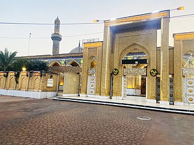

تعارف
La mosquée Abou Hanîfa, appelée également Imam al-Adham, c'est-à-dire « le plus grand imam »), est une des plus importantes mosquées sunnites de Bagdad, en Irak. Elle se trouve dans le quartier sunnite de al-Aʿdhamiyah de Bagdad, au nord-est de la ville.elle a été construite en 700 après.JC
جامع الإمام الأعظم أو جامع أبو حنيفة النعمان هو أحد المساجد والمدارس التاريخية في مدينة بغداد، وتسمى المنطقة حول الجامع منطقة الأعظمية نسبة إليهِ وتقع في شمال بغداد على جهة الرصافة ويقابلها منطقة الكاظمية نسبة إلى مرقد موسى الكاظم الذي يقع فيها، ولقد بني المسجد عام 375 هـ بجوار قبر الإمام أبي حنيفة النعمان، ثم في عام 459 هـ/ 1066م، بني مشهد وقبة على القبر وكذلك مدرسة كبيرة، وتعتبر مدرسة أبي حنيفة الفقهية من أقدم المدارس وتسمى حالياً كلية الإمام الأعظم، وهي واحدة من ثلاثة أقدم جامعات على مستوى العالم، حيث سبقتها جامعة القرويين في المغرب، إذ بني جامع القرويين في عام 859م، والجامع الأزهر في مصر الذي تأسس في عام 972م، ولقد بنيت أول الجامعات الأوروبية بعد ذلك في عام 1088م، وهي جامعة بولونيا في إيطاليا.
The Abu Hanifa Mosque, also known as the Grand Imam Mosque, is a Sunni mosque and shrine, located in the A'dhamiyya district of northern Baghdad, in the Baghdad Governorate of Iraq. The complex is one of the most prominent mosques in Baghdad, that is built around the tomb of Islamic scholar Abu Hanifa al-Nu'man, the founder of the Hanafi school, an Islamic school of Islamic religious jurisprudence.
Ebu Hanife Camii veya İmam Azam Camii, Irak'ın başkenti Bağdat'ta bulunan bir camidir. Cami, 10. yüzyılın sonlarında Hanefi mezhebinin kurucusu Ebu Hanife'nin türbesi etrafında inşa edilmiştir. Cami, Azamiye ilçesinde yer almaktadır.
مسجد ابو حنیفہ عراق کے دار الحکومت بغداد کے شمالی علاقے اعظمیہ میں واقع ایک اہم سنی مسجد اور مزار/مقبرہ ہے۔ یہ مسجد ابو حنیفہ ؛ جو حنفی فقہ کے بانی اور اسلام کے معروف عالم تھے، کے مزار کے گرد تعمیر کی گئی ہے اور اسے بغداد کی مشہور مساجد میں شمار کیا جاتا ہے۔
Die Abu-Hanifa-Moschee ist die bekannteste sunnitische Moschee in Bagdad. Sie wurde von den Osmanen während ihrer über vierhundert Jahre dauernden Herrschaft im Irak in der Nähe von Abu Hanifas Grab gebaut, einem der Begründer der Hanafitischen Rechtsschule. Sie wird auch „Moschee des Größten Imam“ genannt, al-Imām al-Aʿẓam steht für der größte Imâm, wie Abu Hanifa von seinen Anhängern genannt wird. Die Moschee steht im Adamiya-Stadtteil Bagdads (Nord-Bagdad). Die Abu-Hanifa-Moschee gilt als ein sehr wichtiger Ort für sunnitische Muslime, speziell für Hanafiten, wozu auch die Einwohner des Stadtteiles Adamiya gehören. In der Vergangenheit waren die Moschee und der Stadtteil immer wieder ein Schauplatz von Kämpfen zwischen irakischen Rebellen und US-Truppen.
La mezquita Abu Hanifah es una de las más destacadas mezquitas sunitas ubicada en la zona conocida como Adhamiyah, al noreste de Bagdad (Irak), donde la presencia sunita es mayoritaria. La mezquita fue construida en torno a la tumba de Abu Hanifah, conocido como "el Gran Imán", fundador de la escuela de interpretación de la jurisprudencia islámica Hanafí.
La moschea di Abū Ḥanīfa o, meglio, moschea Abū Ḥanīfa, chiamata anche "dell'Imam al-aʿẓam", cioè del sommo Imam) è una delle più importanti moschee sunnite di Baghdad (Iraq).Si trova nel distretto nord-orientale della capitale, che dall'epiteto del grande giurista prende il suo nome di al-Aʿẓamiyya.
A Mesquita de Abu Hanifa é uma das mais importantes mesquitas sunitas localizadas numa área conhecida como Adhamiyah, a nordeste de Bagdade, no Iraque, onde existe uma maioria sunita. A mesquita foi construída em torno do túmulo de Abu Hanifa, conhecido como "o Grande Imam", fundador da escola de interpretação da lei islâmica Hanafi.
Мечеть Абу Ханифы также известная как Джами аль-Имам аль-А‘зам — суннитская мечеть в Багдаде (Ирак). Построена вокруг могилы Абу Ханифы ан-Нумана, основателя ханафитского мазхаба. Находится в районе аль-Азамия на севере Багдада, названном в честь эпитета Абу Ханифы аль-Имам аль-азам.
มัสยิดอะบูฮะนีฟะฮ์ หรืออีกชื่อว่า ญาเมียะอ์อัลอิมามุลอะอ์ซ็อม เป็นหนึ่งในสถานที่มัสยิดของซุนนีที่โดดเด่นที่สุดในแบกแดด ประเทศอิรัก ซึ่งสร้างขึ้นรอบสุสานอะบูฮะนีฟะฮ์ อันนุอ์มาน ผู้ก่อตั้งมัซฮับฮะนะฟี
نقشے پر
دستاویزات اور لنکس
- Wikipédia — Français
- Wikipédia — العربية
- Wikipédia — English
- Wikipédia — Türkçe
- Wikipédia — اردو
- Wikipédia — Deutsch
- Wikipédia — Español
- Wikipédia — Italiano
- Wikipédia — Português
- Wikipédia — 中文
- Wikipédia — Русский
- Wikipédia — ไทย
- Wikidata — Q334716
ڈیٹا: Wikidata (CC0)، ہر 3 ماہ بعد تازہ کیا جاتا ہے۔ سال عمارت کی معلوم قدیم ترین تاریخِ تعمیر ہے: جو عمارت بعد میں مسجد بنی (جیسے آیا صوفیہ)، اس کے لیے اصل عمارت کا سال دیا گیا ہے۔ تصاویر: Wikimedia Commons، ہر تصویر کے صفحے پر مصنف اور لائسنس۔